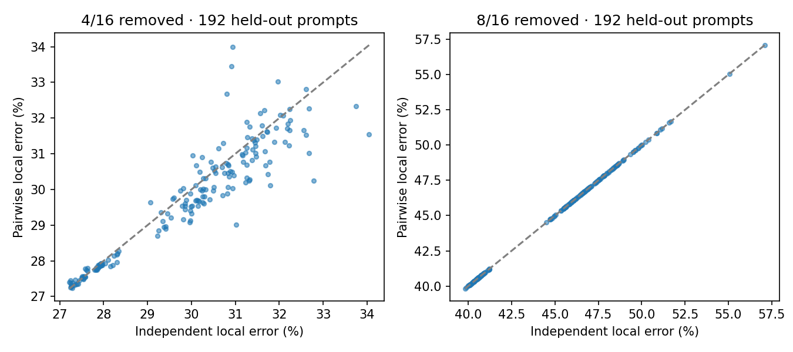

Measured HELD_OUT evidence. 192 prompts, repeated methods are not new samples. Local error is not task accuracy. Deployment NOT_ASSESSED.

Cost shown for a configuration is the six-prompt timing subset, not this individual request.